Previous recommendation withdrawn: the user still sees a double Crown in option 4. Review the new screenshot-based A–D concepts. The findings below are historical, not an active hardware approval.
Crown repair comparison
Five alternatives and two targeted corrections. All keep the 4698 display and headline. Option 4 has the clearest single Crown. Option 1 is closest to the original gesture, with a reservation about the Crown's shape.
Design review only. Originals preserved. No assets uploaded or submitted in this round.
4 — Crown fully visible
The enlarged view shows one compact knurled Crown with no second protruding wheel. The hand hovers above it instead of making contact. The 4698 row, consecutive numbers, Clicks control, clock and headline are visually correct.
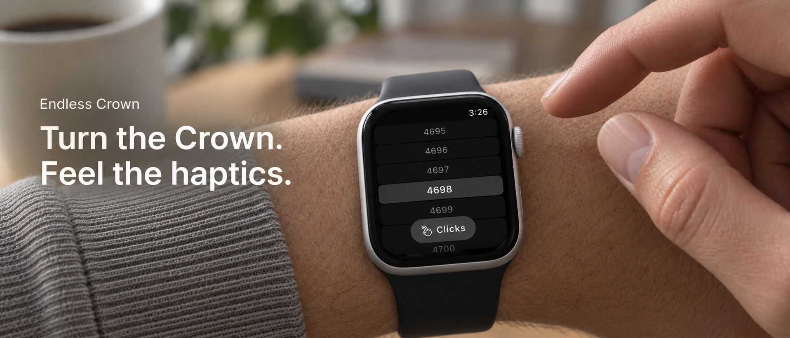
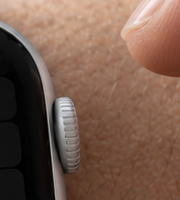
Crown close-upUnretouched crop, enlarged for inspection.
Open full PNG1916 × 821
1 — Closest to the original
The visible second ridged wheel is removed. This is the closest repair to the original pinching pose. The outer face remains thick and partly occluded; hardware is less convincing than option 4.
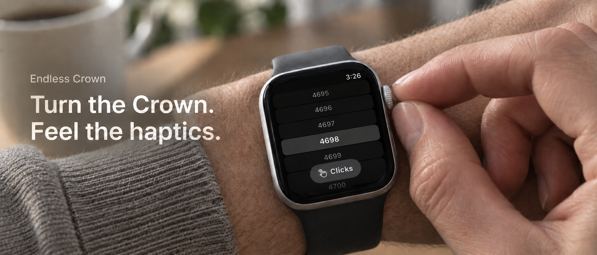
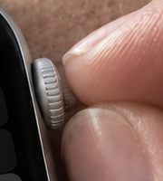
Crown close-upUnretouched crop, enlarged for inspection.
Open full PNG1916 × 821
Original v3 — confirmed double Crown
Attempts that failed hardware review
Kept for reference. These still show smaller protruding cylinders, so they are not shortlisted.
2 — Compact Crown, pinch gesture
The targeted correction retains the stepped Crown and smaller protruding cylinder.
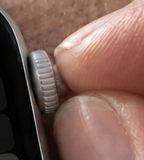
Crown close-upUnretouched crop, enlarged for inspection.
Open full PNG1915 × 821
3 — Compact Crown, single-finger gesture
The targeted correction retains a protruding smaller cylinder.
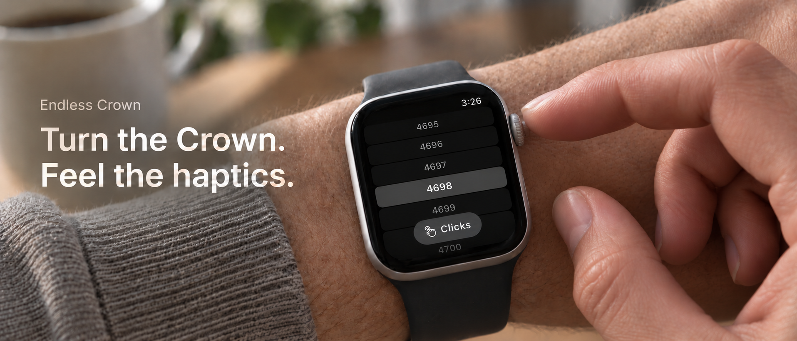
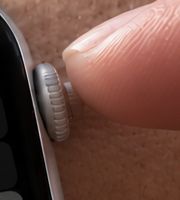
Crown close-upUnretouched crop, enlarged for inspection.
Open full PNG1915 × 821
5 — Light top-edge touch
The new contact pose still generates a smaller cylinder beyond the main Crown.
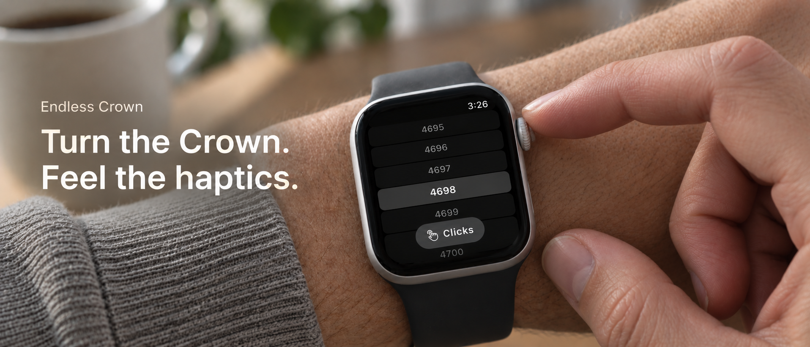
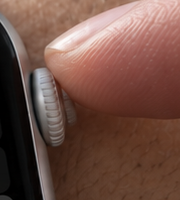
Crown close-upUnretouched crop, enlarged for inspection.
Open full PNG1916 × 821
2 — Clearer Crown, lighter grip
A smaller protruding ridged cylinder remains beside the main Crown.
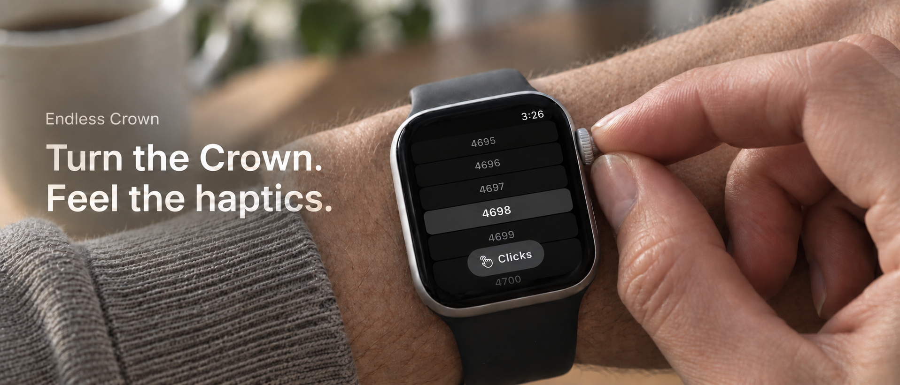
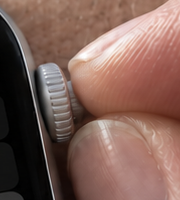
Crown close-upUnretouched crop, enlarged for inspection.
Open full PNG1916 × 821
3 — Single-finger gesture
A second smaller protruding ridged cylinder remains visible.
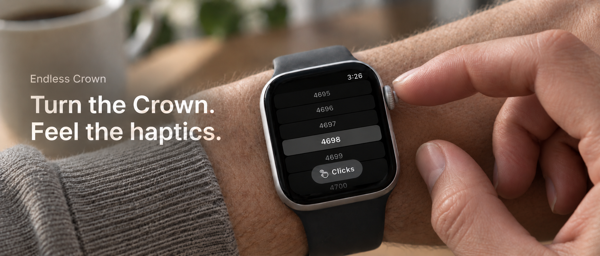
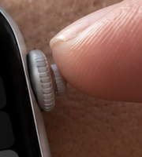
Crown close-upUnretouched crop, enlarged for inspection.
Open full PNG1916 × 821